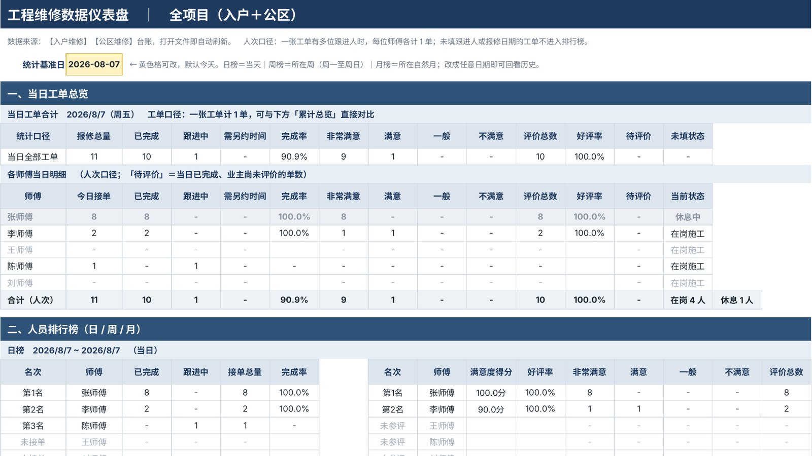
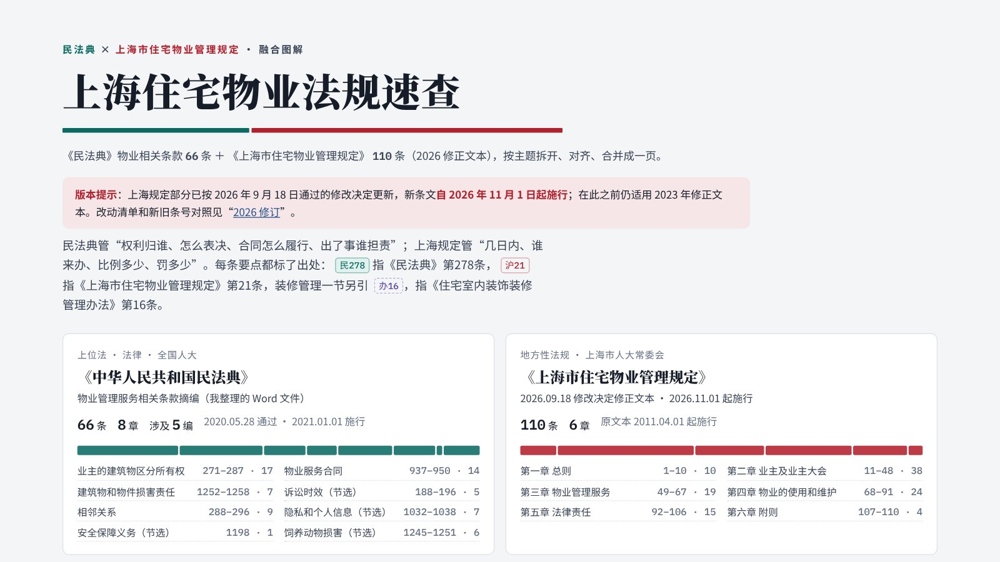

建发央玺花园
前期物业服务标准
把项目的前期物业服务标准做成一份可翻页的网页演示：169 项服务条款分为五大服务模块，一级基础标准与超一级增项逐项对照，另附可搜索的条款库。
电脑上可用键盘方向键翻页；手机上会自动变成上下滑动浏览。
- 编制时间
- 2026 年 8 月
- 形式
- 网页演示，19 页
- 基础标准（一级）
- 56 项
- 增项服务（超一级）
- 113 项
- 服务模块
- 综合管理、设施设备维护、公共秩序维护、保洁、绿化养护
做了 6 年多住宅物业，持物业管理师证书，经手过越秀、龙光、建发的住宅项目。这里放的是我做过的物业服务方案、演示材料和管理工具。
把项目的前期物业服务标准做成一份可翻页的网页演示：169 项服务条款分为五大服务模块，一级基础标准与超一级增项逐项对照，另附可搜索的条款库。
电脑上可用键盘方向键翻页；手机上会自动变成上下滑动浏览。

用 Excel 公式搭的维修工单系统：登记报修后自动编号、列出空闲师傅，仪表盘按日、周、月统计完成率和满意度并给师傅排名，还能按楼栋房号查出一户的全部记录。
页面截图和示例文件均为脱敏数据。

把《民法典》物业相关的 66 条和《上海市住宅物业管理规定》110 条按主题拆开、对齐，合并成一页：每条要点都标出处，另附 2026 修订对照、关键数字速查、客服场景速查和自测卡片。
可高效学习民法典和上海住宅物业管理规定。
上海规定部分已按 2026 年 9 月 18 日的修改决定更新，新条文自 2026 年 11 月 1 日起施行。
全站累计，含你自己的访问。同一浏览器一年内只算 1 个访客。